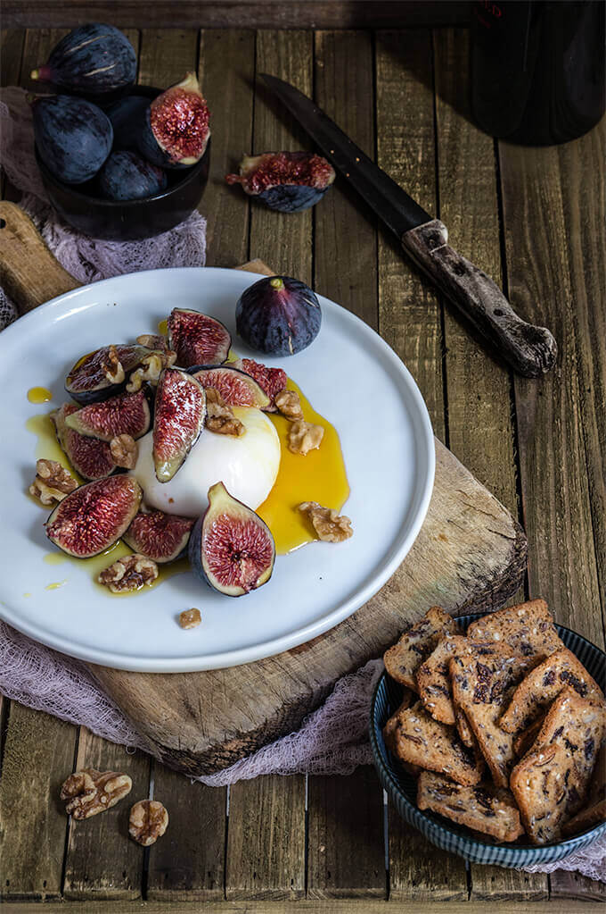

Burrata with Figs and Honey

Ingredients:
Pinch of flakey sea salt and black pepper
1 tbsp crushed pistachios
Toasted sourdough or baguette
Steps:
Cut the Burrata into 4 pieces and add to a shallow bowl.
Top the Burrata with figs, oil, balsamic glaze, honey, pistachios, sea salt and black pepper.
Serve with toasted sourdough or baguette.